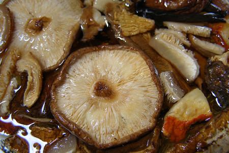

Segundo plato
Risotto integral de kale y setas
Ingredientes:
- Setas shiitake deshidratadas (10g)
- Cebolla blanca pequeña (1)
- Diente de ajo (1)
- Arroz integral (140g)
- Vino blanco (100ml)
- Caldo de verduras (600ml)
- Kale en hojas (2)
- Mantequilla (20g)
- Queso Parmesano (40g)
- Tomillo seco
- Pimienta negra
- Sal
- Aceite de oliva virgen extra
Paso a paso:
- Poner las setas en un recipiente con, aproximadamente, 300 ml de agua, remover y dejar rehidratar como mínimo 20 minutos. Escurrir y reservar el caldo.

- Picar fina la cebolla y el diente de ajo. Lavar las hojas de kale y cortar en piezas pequeñas, desechando el tallo central por ser algo duro. Calentar el caldo y mantenerlo templado.

- Pochar la cebolla con el diente de ajo en una cazuela amplia, con una pizca de sal, dejando que se doren a fuego suave hasta que reduzcan el volumen. Incorporar el arroz seco y remover durante un minuto. Regar con el vino y dejar que evapore el alcohol.

- Añadir las setas, dar unas vueltas y echar su caldo reservado. Bajar el fuego cuando llegue a ebullición y mantener la cocción constante pero suave. Regar poco a poco con el caldo a medida que el arroz lo vaya pidiendo, sin prisa. La técnica es la habitual de un risotto corriente, pero necesitará algo más de líquido y más tiempo, dependiendo de la variedad de arroz.

- Agregar la mantequilla troceada, el queso recién rallado y incorporamos la col. Comprobar el punto de sal, añadir un poco de tomillo y pimienta negra recién molida.

Resultado final:

Volver al Menú saludable
Volver al Primer plato (Sopa casera de pollo)
Ir al Postre